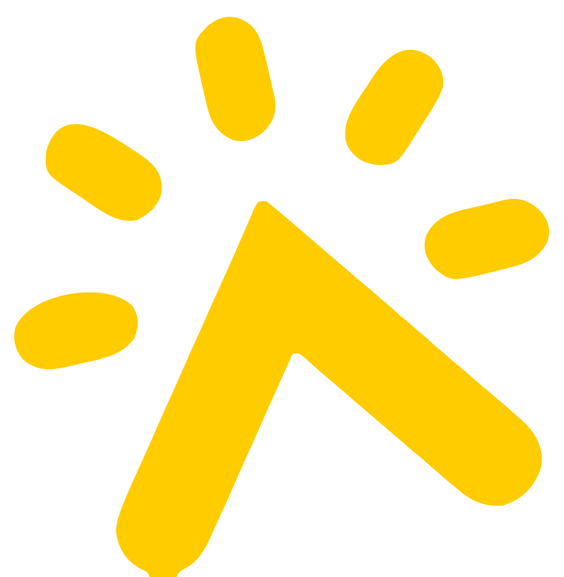
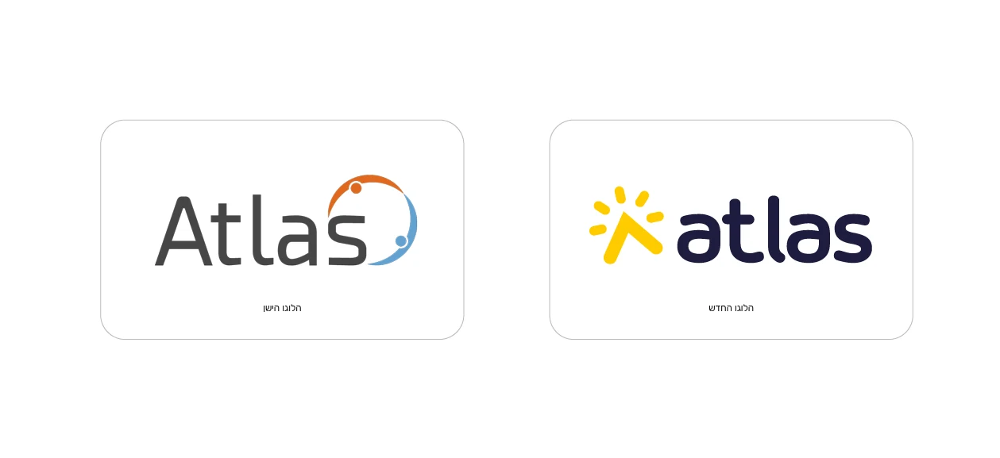
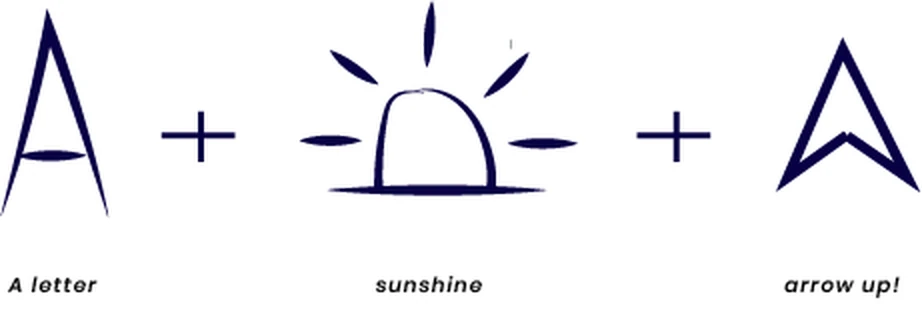
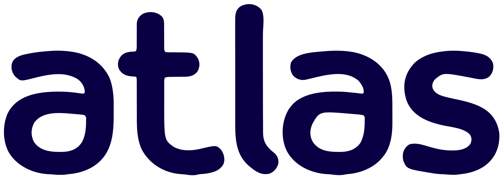
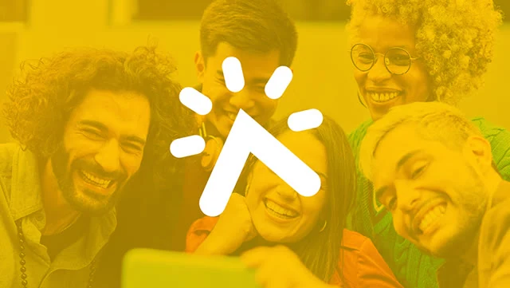

The total package.
Full branding, the entire product design and a trendy new website for Atlas, the platform that gives fundraisers, funds and non-profit organizations high-end tools.

I was called for the total package.
A full re-branding, from a new logo to a fresh visual language, a trendy new website and the entire product design.
Atlas provides high-end tools for fundraisers, funds and non-profit organizations, mainly for philanthropy and social reach.
From a grey wordmark to a rising sun.

A letter, a sunrise and an arrow up.
The symbol is built from three simple ideas. The letter A, the light of the sun, and an arrow pointing up: a brighter day for the causes Atlas serves.

Symbol and wordmark, in balance.
A friendly, rounded lowercase wordmark sits next to the symbol, sharing its weight so the two read as one.

#FFCC00
#090044
Sunshine on real people.

The symbol in white over photography, in navy on yellow, and the wordmark in white on navy.
A trendy new website, ready to click.
The entire product, as a clickable prototype.
Atlas product demo prototype. Click through the flow.
A big thank you to the lovely team at Atlas, who gave me the creative freedom and let me walk them through the creative process, toward their business growth and success.